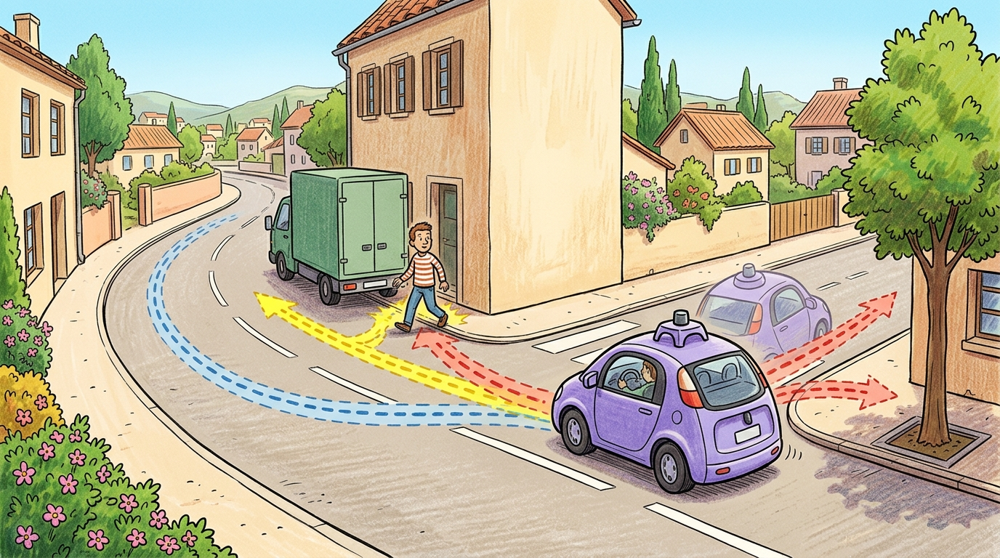

Driving is a stack of commitments at different time scales: which roads to take over minutes, which gap to take over seconds, and which steering angle to take right now.
On layered planning and the HD map
A robotaxi crossing an unprotected left turn faces three decisions simultaneously: is the gap in oncoming traffic large enough, which of the predicted pedestrian paths blocks the exit, and what speed keeps the vehicle inside its comfort envelope if it must abort. No single algorithm handles all three. Autonomous vehicles work today because planning is split across time horizons: a route layer picks roads, a behavior layer picks maneuvers, a local layer picks trajectories, and a scenario layer stress-tests every choice against plausible futures before the car commits. Understanding how those layers interact, where they hand off, and how HD maps and fallback policies hold the stack together is now the core engineering problem separating supervised pilots from full urban deployment. By the end of this section you should be able to describe the four planning layers and their update rates, explain how an HD map and lane-relative localization feed route and behavior decisions, and turn a single driving situation into a functional, logical, and concrete scenario that produces auditable safety evidence.

This section assumes familiarity with the Frenet coordinate frame from section 48.4 and with scan-matching localization from section 29.3, both of which underlie the lane-relative reasoning used here. The scenario-based validation ideas introduced here are extended into closed-loop evaluation and disengagement analysis in section 48.9. The safety-case methodology recurs in Part 11 alongside formal hazard analysis and SOTIF-style operational design domain reasoning in sections 54.1 and 54.6.
Route, Behavior, And Local Planning
Ask a self-driving car to choose steering angles once per minute and it will wander into oncoming traffic between decisions; ask it to re-plan the whole cross-town route sixty times a second and the road graph chokes before the wheel ever turns. A working driving stack escapes this bind by splitting the problem across four clocks that each run at their own speed, as Figure 48.8A illustrates with an occluded-pedestrian scene where route, behavior, prediction, trajectory, control, and fallback evidence all attach to one road situation. Route planning chooses a coarse path through a road graph. Behavior planning chooses maneuvers such as follow, yield, merge, stop, nudge, overtake, or pull over. Local planning turns that decision into a dynamically feasible trajectory with speed, curvature, comfort, and collision constraints. The layers operate at very different rates: route planning re-evaluates roughly once per minute, behavior planning replans every 100 to 500 ms, and local trajectory optimization runs at 10 to 20 Hz. Collapsing all three into a single loop at the local rate would typically demand roughly 10 times more compute and improve route quality not at all, since a road-graph search does not need to be re-solved 10 to 20 times a second to stay correct. Running route planning at the local rate would similarly flood the road graph with queries it cannot serve in time.
A term worth pinning down before it recurs below: a scenario in this section always means a structured, replayable test case (a road layout, actor scripts, and pass/fail criteria), not a live driving situation on the road. The rest of this section builds toward exactly that machinery: after covering how the four layers cooperate and how the map anchors them, later subsections show how to turn one driving situation into a functional, logical, and concrete scenario suite that produces auditable safety evidence.
The planner does not react to one fixed future. It plans against uncertain futures predicted for other agents, then updates as those agents respond. That makes driving an interactive embodied system, not a static path search.
A common assumption is that the three planning layers (route, behavior, local) form a strict one-way pipeline: route feeds behavior, behavior feeds local, and each layer waits passively for input from the layer above. This mental model breaks in embodied AI. Perception and prediction update continuously. Lower layers can invalidate upper-layer decisions mid-execution. Consider a concrete case: the behavior planner selects "merge" based on a predicted gap. Within 200 ms, a revised prediction closes that gap. The planner must re-invoke behavior selection immediately, before the local trajectory is even half-executed. The correct model is a receding-horizon stack. Each layer runs on its own clock, monitors sensor evidence, and can escalate upward. The layers cooperate through shared state and evidence signals, not through a one-shot handoff.
HD Maps And Localization
The shared state that lets these layers cooperate has to be anchored to something the whole stack agrees on, and for driving that anchor is the map.
Route and behavior planning both stand on a high-definition map. Unlike a navigation map, an HD map encodes lane geometry, traffic signs, crosswalks, and stop lines to roughly 10 cm precision, organized as layers: lane centerlines and boundaries, regulatory elements (signs, signals, speed limits), and topology (which lane connects to which). The vehicle locates itself in this map by scan matching, aligning live LiDAR or camera features against the stored map, which yields a lane-relative pose far more precise than raw GNSS. Crowdsourced map updates, where the fleet reports discrepancies, keep the map fresh.
Construction zones are the canonical HD-map hazard. The map shows a lane that is now coned off, so a planner that trusts the map will route into a closed lane. The mitigation is online perception that detects cones, barriers, and lane closures and lets live evidence override the stored map; the residual risk is the set of construction layouts the detector still mishandles.
The most basic map query a planner makes is "which lane am I in, and where is its center?" The example below performs a nearest-centerline lookup: given the ego position, it returns the closest lane-centerline point, the seed of lane-relative localization and of the Frenet reference path from Section 48.4.
import numpy as np
# A tiny HD-map fragment: two lane centerlines as polylines of (x, y) points.
lanes = {
"lane_L": np.array([[0, 1.8], [10, 1.8], [20, 1.9], [30, 2.2]], dtype=float),
"lane_R": np.array([[0, -1.8], [10, -1.8], [20, -1.7], [30, -1.4]], dtype=float),
}
def nearest_centerline(ego_xy, lanes):
"""Return (lane_id, nearest centerline point, lateral distance) for the ego."""
best = (None, None, np.inf)
p = np.asarray(ego_xy, dtype=float)
for lane_id, pts in lanes.items():
d2 = np.sum((pts - p) ** 2, axis=1) # squared distance to each map point
i = int(np.argmin(d2))
dist = float(np.sqrt(d2[i]))
if dist < best[2]:
best = (lane_id, pts[i], dist)
return best
ego = (12.0, -1.2) # ego pose near the right lane
lane_id, cpt, lateral = nearest_centerline(ego, lanes)
print(f"ego in {lane_id}: nearest center {tuple(cpt)}, lateral offset {lateral:.2f} m")
Expected output: the ego at (12.0, -1.2) is assigned to lane_R with a nearest centerline vertex at (10.0, -1.8) and a distance of about 2.09 m (dominated by the 10 m vertex spacing of this coarse polyline; a real HD map is sampled far more densely). The lane assignment is the lane-relative localization a behavior planner needs before it can reason about gaps and maneuvers, and in a real stack the snap is refined by scan matching against the full HD map layers.
Scenario-Based Validation
Algorithm: Hierarchical Driving Plan with Scenario Validation
Input: ego pose $\mathbf{x}_t$, HD-map graph $\mathcal{G}$, goal pose $\mathbf{g}$, agent predictions $\{\hat{\pi}_i\}$, scenario suite $\mathcal{S}$, safety threshold $\alpha$
Output: validated trajectory $\tau^*$, safety evidence vector $\mathbf{e}$
- Route planning. Search $\mathcal{G}$ for the lowest-cost lane sequence $R = \arg\min_r \sum_k c(r_k)$ from $\mathbf{x}_t$ to $\mathbf{g}$, where $c(r_k)$ encodes travel time, legality, and map confidence.
- Lane-relative localization. Project $\mathbf{x}_t$ into Frenet frame $(s, d)$ along the leading lane centerline; compute lateral offset $d = \|\mathbf{x}_t - \mathbf{p}^*\|$ where $\mathbf{p}^*$ is the nearest centerline point.
- Behavior selection. Enumerate candidate maneuvers $\mathcal{M} = \{\text{follow, yield, merge, stop, nudge}\}$; score each under the predicted futures $\{\hat{\pi}_i\}$; select $m^* = \arg\max_{m \in \mathcal{M}} \sum_i w_i U(m, \hat{\pi}_i)$ where $U$ is a comfort-and-safety utility and $w_i$ are prediction confidence weights.
- Trajectory optimization. Given $m^*$, generate a set of candidate local trajectories $\{\tau_j\}$ satisfying kinematic constraints; solve $\tau^* = \arg\min_j J(\tau_j)$ where $J = \lambda_1 J_{\text{collision}} + \lambda_2 J_{\text{comfort}} + \lambda_3 J_{\text{progress}}$ and $\nabla_\theta J$ drives continuous refinement when a differentiable planner is used.
Checkpoint
So far: the stack has picked a coarse route through the map, localized the ego in the Frenet frame, chosen a maneuver by scoring it against predicted futures, and turned that maneuver into one feasible trajectory; the remaining steps check that trajectory against a scenario suite and hand it to the controller.
- Scenario matching. For each scenario $s_k \in \mathcal{S}$, compute match score $\sigma_k = \text{sim}(\mathbf{x}_t, s_k.\text{context})$; if $\sigma_k \geq \theta_{\text{match}}$, retrieve the associated safety criteria and required evidence metrics.
- Safety evidence collection. Evaluate $\tau^*$ on matched scenario criteria: TTC (time-to-collision), lateral jerk $\ddot{d}$, rule compliance flags, fallback availability, and ODD (operational design domain) membership; store results in $\mathbf{e}$.
- Safety gate. If $\min(\mathbf{e}) \geq \alpha$, emit $\tau^*$; otherwise escalate to the fallback policy $\pi_{\text{safe}}$ (controlled deceleration to a minimal-risk condition) and log the rejection with evidence vector $\mathbf{e}$ for offline scenario review.
- Controller handoff. Pass $\tau^*$ as the reference $(s(t), d(t), v(t))$ to the tracking controller; monitor lateral error $|d_{\text{actual}} - d_{\text{ref}}|$ and re-invoke behavior selection if deviation exceeds a threshold.
Scenario testing is the bridge from impressive driving clips to engineering evidence. A scenario names the road layout, actors, initial states, behavior scripts, weather, sensor configuration, success criteria, and termination rules. OpenSCENARIO, ScenarioRunner, CommonRoad, and CARLA-style tooling make those assumptions explicit, forming the same scenario testing and safety case framework covered in Section 48.6.
A useful scenario program separates functional scenarios, logical scenarios, and concrete scenarios, a decomposition called the scenario abstraction hierarchy. The functional scenario says "occluded pedestrian after parked van." The logical scenario defines parameter ranges for speed, distance, visibility, and pedestrian timing. The concrete scenario fixes one reproducible test instance with exact values.
Think of a recipe book. The functional scenario is the dish name: "roast chicken." The logical scenario is the recipe with adjustable parameters: oven temperature between 180 and 220 degrees, cooking time scaled to the bird's weight. The concrete scenario is tonight's dinner: a 1.8 kg bird at 200 degrees for 75 minutes. A chef who only ever cooks one specific bird at one specific temperature has not actually learned to roast chicken; they have memorized a single instance. Testing a planner only on fixed concrete scenarios makes the same mistake: you learn exactly those cases and miss the entire surrounding region where real danger lives.
Step-Through: scenario abstraction hierarchy
Trace one functional scenario down to a concrete test instance with actual numbers, now that the hierarchy above has named the three rungs. Functional: "occluded pedestrian steps out from behind a parked van." Logical: attach parameter ranges, pedestrian crossing speed in [0.8, 2.4] m/s, occlusion depth (van length blocking sightline) in [2, 8] m, ego approach speed in [6, 14] m/s. Grid each range at 3 values: speed {0.8, 1.6, 2.4}, depth {2, 5, 8}, ego speed {6, 10, 14}. That yields 3 x 3 x 3 = 27 concrete scenarios. Concrete instance #14: pedestrian speed 1.6 m/s, occlusion depth 5 m, ego speed 10 m/s, random seed 4242. Run it closed-loop: the pedestrian becomes visible 5 m before the conflict point, so with ego at 10 m/s the planner has 5/10 = 0.5 s of sightline before the pedestrian reaches the lane (1.6 m/s over a 2 m half-lane = 1.25 s to conflict). Measured time-to-collision at first detection = 1.25 s, below the nominal 2.0 s comfort threshold, so the safety gate rejects the nominal "nudge" maneuver and the fallback policy commands a controlled deceleration. Pass criterion: no collision and lateral jerk under 4 m/s^3. Logging seed 4242 makes this exact margin reproducible across planner versions.
This hierarchy matters in embodied AI because a physical robot cannot brute-force every parameter combination in real space. A car that fails only above 1.8 m/s pedestrian emergence in a gap narrower than 4 m stays hidden until you know which parameters to vary. Pick arbitrary concrete instances instead and you miss whole failure regions, leaving the vehicle safe on the test track but dangerous at the deployment boundary. Passing every scenario in your suite proves only that the planner drives the roads you already imagined.
The mechanism works by treating parameters as intervals rather than points. A logical scenario stores a tuple of ranges, for example pedestrian speed in [0.8, 2.4] m/s and occlusion depth in [2, 8] m. Coverage tools such as PEGASUS or CommonRoad sample or grid these ranges, run each concrete instance through a closed-loop simulator, and record pass or fail. A grid of just five values per parameter across four parameters already produces 625 concrete scenarios from a single logical one. Without the hierarchy, a test engineer writing fixed concrete cases would have to author each of those 625 variants by hand to reach the same coverage. The resulting coverage map shows which parameter region the planner handles and where its safety margin collapses. It turns an unbounded physical test space into a finite, auditable evidence set.
When converting a logical scenario into a concrete one, fix every free parameter in OpenSCENARIO's ParameterDeclaration block and record the random seed used by any stochastic actor. A common gotcha is leaving pedestrian timing as a sampled range: two engineers running the "same" scenario then observe different collision margins and cannot compare results. Pinning seed and parameter values turns a reproducing-only-sometimes failure into a regression test you can track across planner versions.
| Layer | Question | Evidence Metric |
|---|---|---|
| Route planning | Which road sequence reaches the goal? | Route completion and map validity |
| Behavior planning | Which maneuver is socially and legally appropriate? | Rule violations and interaction safety |
| Prediction | What might other agents do? | Calibration, miss rate, interaction coverage |
| Trajectory optimization | Which path and speed are feasible now? | TTC, comfort, jerk, curvature, collision margin |
| Control | Can the vehicle track it? | Lateral error, actuator saturation, stability margin |
Safety Case Thinking
Reproducible coverage across the parameter grid produces evidence, but evidence only earns deployment when it is assembled into an argument that a regulator or safety engineer can audit, which is the job of the safety case.
A safety case connects hazards, mitigations, tests, and residual risk. For driving, this means the evidence should be organized by operational design domain: road type, weather, speed range, traffic density, lighting, map quality, sensor availability, and fallback behavior.
Organize the evidence by operational design domain, and a gap in coverage becomes a gap you can name and defend against.
SOTIF (Safety of the Intended Functionality)-style reasoning asks whether the intended function can be unsafe even without a component failure. That question is central for learned perception and planning: the camera may work, the model may run, and the vehicle may still choose an unsafe maneuver because the scenario sits outside the validated operational design domain.
Expected output: the scenario name should identify a recognizable hazard pattern and the metric count should confirm that the planner will be judged on more than route completion alone. If your scenario card cannot name its fallback behavior or its ODD, it is not strong enough to support a safety claim.
Real-World Application: Waymo Driver
Public Waymo materials describe a production stack that typically follows this layered split: a route layer over an HD road graph, a behavior layer selecting maneuvers against predicted agent intents, and a local trajectory optimizer, all gated by a scenario-validation pipeline. Before deploying a software update, Waymo reports replaying it through millions of logical scenarios derived from real fleet miles plus reactive simulated agents (their Sim Agents work), so a change is judged on TTC and fallback evidence across the parameter space rather than on a small set of demo clips; exact internal architecture details are not fully public, so treat this as a representative industrial pattern rather than a verified implementation spec.
Use CARLA and ScenarioRunner for closed-loop scenario execution, CommonRoad for planning benchmarks, OpenSCENARIO for portable scenario descriptions, and nuScenes or Waymo Open Dataset for perception and prediction grounding.
For an unprotected left turn, evaluate route completion only after checking gap selection, prediction uncertainty, acceleration comfort, time-to-collision, rule compliance, controller tracking, and the safety monitor's intervention threshold. A completed route with an unsafe gap is not a planning success, it is a delayed incident report.
A scenario suite can look broad while missing the operational design domain boundary that matters most. Track weather, visibility, road topology, traffic density, map quality, and fallback assumptions explicitly.
Treat route, behavior, and scenario-based planning like a control-room label. If the label does not tell a future debugger what moved, what sensed, or what failed, it is decoration rather than engineering knowledge.
Language-conditioned planning and natural-language scenario specification. Systems such as DiMA (Waymo, 2024) and DriveVLM (Tsinghua/Li Auto, 2024) inject vision-language and world-model driving stacks directly into the behavior-planning loop: the LLM interprets ambiguous road geometry and social context, produces a maneuver rationale in natural language, and then conditions trajectory sampling on that rationale. The payoff is not just explainability; VLM grounding allows planners to generalize to rare intersection layouts and mixed-language signage that symbolic HD-map parsers fail on. The open safety question is whether VLM hallucinations in the reasoning chain produce subtly invalid maneuver preconditions that the downstream trajectory optimizer accepts silently.
Diffusion-based trajectory generation replacing optimization-based planners. MotionDiffuser (Waymo Research, 2023-2024) and DiffusionDrive (NVIDIA, 2024) treat trajectory generation as conditional score-based denoising over a distribution of futures. Unlike sampling from a fixed candidate set, a diffusion planner covers multi-modal future distributions without hand-crafted costs, and can represent the full tail of low-probability evasive maneuvers that a cost-function planner typically underweights. Industrial deployment of diffusion planners is accelerating: NVIDIA's Cosmos World Foundation Model (2025) pre-trains a video diffusion model on driving footage and uses it both for simulation and as a trajectory prior.
Reactive adversarial scenario generation with learned agent models. Waymo's Sim Agents benchmark (2023-2024) and the Bench2Drive framework (OpenDriveLab, 2024) train transformer-based agent models on millions of real-world logged interactions to produce reactive ghost actors that actively probe ego-planner weaknesses. Unlike static log replay, a reactive adversary adjusts its gap timing in response to the ego vehicle's observed speed, typically exposing failure modes at TTC values (around 1.4 s in reported cases) that a static scenario suite covering only the nominal 2.0 s threshold tends to miss.
Open problem for PhD research: All three directions above converge on the same gap: there is no principled method to certify coverage when the scenario generator is itself a learned model. One productive research direction is to formalize this as a PAC-style argument bounding the probability that a learned adversary misses a safety-critical region of the ego planner's failure boundary, then design an active-learning loop that drives scenario synthesis toward the decision boundary rather than sampling uniformly from the operational design domain.
Can you turn one functional scenario into a logical parameter range and then into a concrete reproducible test case?
Build a scenario suite with cut-in, unprotected left turn, occluded pedestrian, emergency vehicle, low-friction curve, and construction detour. Define one metric and one expected failure for each layer of the planning stack.
Lab: Sweep a logical scenario into a coverage map
Goal: turn one logical "occluded pedestrian" scenario into a grid of concrete instances and produce a pass/fail coverage map that reveals where the planner's safety margin collapses. Tools needed: Python plus CARLA 0.9.x with ScenarioRunner (or, for a lighter setup, CommonRoad-IO with its drivability checker). Setup (15-30 min): author one OpenSCENARIO logical scenario with a parked van occluding a crossing pedestrian; expose pedestrian speed and occlusion depth as ParameterDeclaration entries and pin every other parameter plus the actor random seed. What to vary: sweep pedestrian speed over {0.8, 1.4, 2.0, 2.6} m/s and occlusion depth over {2, 4, 6, 8} m (a 4 x 4 = 16-instance grid). What to observe: for each concrete instance log minimum time-to-collision, whether the fallback (controlled deceleration) fired, and collision yes/no; plot the 16 cells as a heatmap. You should see a clear boundary, faster pedestrians at deeper occlusion cross from "safe" to "fallback fired" to "collision," and that boundary is the planner's real ODD edge. Then re-run one failing cell with the same seed to confirm the failure reproduces exactly.
Scenario-based planning is credible when route, behavior, prediction, local trajectory, control, and safety-case evidence are tied to the same operational design domain.
Project Ideas
Beginner (weekend): Build a three-layer planning demo in a Gymnasium grid-world where a simulated vehicle chooses routes, selects maneuvers (follow, yield, stop), and generates short trajectories using a simple cost function. The key challenge is keeping the route, behavior, and local layers on separate update clocks without race conditions in a single Python process.
Intermediate (1-2 weeks): Implement a scenario-based validation harness in CARLA using ScenarioRunner and OpenSCENARIO: define a logical scenario for an occluded pedestrian after a parked vehicle, sweep pedestrian speed and occlusion depth across a parameter grid, and record TTC and fallback activation rate for each concrete instance. The key challenge is pinning random seeds and actor timing so that every parameter combination produces a reproducible concrete test case that can be re-run across planner versions.
Intermediate (1-2 weeks): Integrate a ROS2 behavior tree (nav2 BehaviorTreeCPP) with a PyBullet vehicle simulation: the behavior tree selects among follow-lane, yield, and pull-over nodes while a separate ROS2 node runs a receding-horizon trajectory optimizer at 10 Hz and publishes reference paths. The key challenge is designing the shared blackboard so that a revised prediction from a mock perception node can escalate from the local planner back up to behavior selection mid-maneuver without dropping in-flight trajectory commands.
Section References
CARLA ScenarioRunner. https://github.com/carla-simulator/scenario_runner
Scenario execution engine for CARLA with OpenSCENARIO support.
nuScenes. https://www.nuscenes.org/
Multimodal autonomous driving dataset for perception and prediction.
Waymo Open Dataset. https://waymo.com/open/
Large-scale autonomous driving dataset for perception and behavior research.
ASAM OpenSCENARIO. https://report.asam.net/asam-openscenario
Scenario-description standard for dynamic traffic scenarios.
ISO 21448:2022, Road vehicles, SOTIF. https://www.iso.org/standard/77490.html
Safety of the intended functionality reference for road vehicle systems.
DLR PEGASUS project. https://www.dlr.de/en/ts/research-transfer/projects/pegasus
Scenario-based validation reference for automated driving safety arguments.